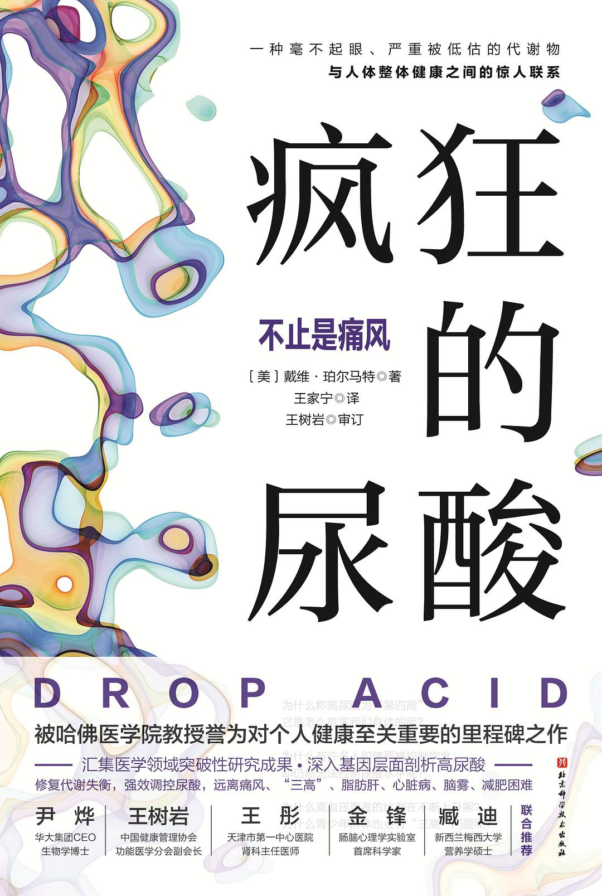

葡萄糖是饮食所摄入的碳水化合物分解后的产物，是一种单糖。 葡萄糖进入血液后，向胰腺发出释放胰岛素的信号，胰岛素驱动细胞处理葡萄糖，让血糖恢复正常。 一些进入细胞的葡萄糖会被线粒体处理，生成ATP，给细胞供能。 额外的葡萄糖会以糖原的形式储存在肌肉和肝脏中。 葡萄糖也可以转化为脂肪（通常是甘油三酯的形式）储存在脂肪细胞中。 必要时，身体会糖原异生过程利用脂肪或蛋白质反向制造葡萄糖。
葡萄糖持续进入人体（通常由于过度食用含有精制糖的深度加工食品），会导致胰岛素水平直接且持续飙升。 细胞通过减少其表面对胰岛素有反应的受体数量来适应这一变化，从而抵抗胰岛素泛滥造成的影响。 这会导致胰岛素抵抗。 为应对这一情况，胰腺会进一步制造更多的胰岛素。 较高的胰岛素水平使得细胞占用更多的糖分。 这就形成了恶性循环，最终导致2型糖尿病。
尿酸能够导致胰岛素抵抗和糖尿病之外，还会加剧葡萄糖-胰岛素这一循环，使代谢问题更加严重。 糖尿病患者血糖高是因为身体无法将糖运输到细胞中储存并转化为能量。 这些存留在了血液中的糖会对人体造成许多影响：
炎症：慢性高血糖引发炎症的途径很多，从炎症分子的释放到炎症基因的表达，再到体重增加的影响，都会导致身体最终出现炎症。 体重增加通常与高血糖同步，因为额外的葡萄糖会转化为脂肪。 多余的脂肪，特别是腰部周围的脂肪，会促进免疫细胞的激活，并促进大量的促炎性化学物质的分泌。 因此，糖尿病作为一种葡萄糖调节失调的疾病，具有严重的促炎作用。
糖化：当“黏性”葡萄糖分子附着在体内的蛋白质、脂肪和氨基酸上时，会发生一种名为糖化的化学反应，生成晚期糖基化终末产物。 这种产物会与晚期糖基化终末产物受体结合，引发炎症，并引发慢性疾病。 用于测量平均血糖的糖化血红蛋白检测的是人体90天内的糖化血红蛋白水平，因此，它也可以看作检验炎症的指标之一。 如果想要直观地了解晚期糖基化终末产物的影响，可以仔细观察一下周围出现过早衰老的人的皮肤——往往是松弛、没有光泽、有色块沉积且布满皱纹的。 这些都是因蛋白质与糖结合而出现的物理效应。 血管内出现有害的晚期糖基化终末产物，会引发心血管疾病。 通过高温烹饪的食物，如烧烤、油炸食品和烤面包中会含有晚期糖基化终末产物。
氧化应激：高血糖会导致人体生成过量的自由基，这种危险的活性分子会损害细胞。 研究认为，糖尿病中的许多并发症都是由活性氧过量引起的。 活性氧就是一种由高血糖引起的特定类型的自由基。 即使只是短期处于高血糖水平，体内也会有自由基产生，抗氧化剂会减少，导致组织损伤。 过多的自由基活动导致的失衡状态，就是氧化应激。 这种状态会损害一氧化氮信号的传导，一氧化氮有助于血管扩张和葡萄糖的利用。 高血糖还会导致储存在脂肪细胞中的游离脂肪酸氧化，引发更多炎症。 过量的葡萄糖会导致低密度脂蛋白胆固醇的氧化，增加血管中斑块积聚的风险。
线粒体功能障碍：线粒体功能障碍会使线粒体无法有效产生能量，导致细胞无法正常工作，进而引发各种各样的健康问题。 活性氧会对线粒体造成损伤，使得细胞将燃料转化为能量的能力降低，导致有毒脂肪代谢物在细胞内积累。 这些脂肪代谢物会黏附于细胞内部，破坏胰岛素通信通路，进一步破坏细胞的能量平衡。
基因表达变化：试验表明，空腹血糖水平急剧升高可以改变数百个基因的表达，影响从能量代谢到免疫反应等多种细胞生命活动。 一些基因表达的变化还会引发额外的炎症。
一氧化氮是一种由身体自然产生的物质，对健康十分重要：
促进血管舒张。 血管扩张时，血管的容积会增加，降低血压并促进血液循环。
让胰岛素从血液进入细胞（主要是肌肉细胞中），从而让葡萄糖进入细胞并在这里转化为糖原（葡萄糖的储存形式）。
尿酸主要通过2种方式逐渐破坏体内的一氧化氮的活性：
破坏它的生成
破坏它的工作方式
在缺乏一氧化氮和一氧化氮功能受损的情况下，人体的胰岛素功能会受到损伤，心血管的整体健康会受到影响。 这就是为什么一氧化氮缺乏和一氧化氮功能受损与心脏病、糖尿病甚至勃起功能障碍有关。 研究一氧化氮对人体作用的科学家们早就证明，降低一氧化氮水平是诱导胰岛素抵抗的一种机制。
果糖在胃肠道中的消化吸收机制与葡萄糖不同：
葡萄糖会刺激胰腺释放胰岛素，但果糖不会。
葡萄糖的代谢过程的第一步（葡萄糖的磷酸化）是在葡糖激酶催化下分解葡萄糖，整个过程被小心调节，分解所释放的ATP会在细胞中维持稳定的水平。
果糖进入人体后，会迅速被血液吸收，被运输到肝脏中进行代谢。 在肝细胞内，果糖激酶开始工作，做出包括消耗ATP在内的一系列事情。 果糖不会帮助生产能量，相反，果糖代谢需要消耗能量。 其消耗ATP的方式完全不受管制。 一个细胞遭遇大量的果糖，其ATP的水平会骤降40%～50%。
果糖抢走ATP会带来一些下游效应，不仅会导致线粒体功能障碍，还会导致血液中尿酸水平的快速上升。 由于果糖消耗了细胞中的能量，细胞会发出能量快用完的求救信号。 这迫使身体切换到储能模式：减缓新陈代谢以减少静息能量消耗（燃烧的脂肪会更少），所摄入的能量可能会被囤积下来（成为身体中脂肪的一部分）。
在果糖代谢的过程中，ATP会转化为腺苷——磷酸，并在一系列复杂的代谢过程后生成尿酸。 高尿酸会进一步激发果糖激酶的作用，促进果糖代谢，一个正反馈循环随之产生。 高尿酸使果糖激酶处于激活状态，持续进行果糖代谢，进一步加剧能量消耗并导致线粒体功能障碍，引发炎症和氧化应激，升高血压，增加胰岛素抵抗，并触发体脂的产生。
在肝脏内被代谢时，除了消耗能量外，果糖代谢会直接导致脂肪的产生——主要是以甘油三酯的形式存在，这是人体中最常见的脂肪存在形式，最终导致脂肪肝。 当甘油三酯在血液中含量过高时，会增加心脏病和冠心病等心血管疾病的患病风险。
脂肪在肝细胞中的堆积会对人体造成严重破坏，因为它会直接影响胰岛素发挥作用和葡萄糖的储存。 果糖代谢生成的尿酸也会对胰岛造成氧化应激作用。 胰岛是胰腺内由内分泌细胞组成的球形细胞团。 虽然果糖不会直接提高胰岛素水平，但它最终还是会在尿酸的作用下通过肝脏这个“后门”途径增加胰岛素抵抗。
人体可以将体内的葡萄糖转化为果糖。 这一转化过程是通过激活一种叫作醛糖还原酶的特定酶来实现的。 科学家们曾在小鼠身上做过相关研究，验证了通过盐来激活这种酶，并促进内源性果糖生成的可能性。 这项研究还发现，高盐饮食会诱发小鼠的代谢综合征。 然而这其中，那些缺乏果糖激酶的小鼠则并不会患上代谢综合征，也不会出现肥胖现象。 这里所说的果糖激酶是果糖代谢所必需的酶，缺少这种酶也就意味着阻断了尿酸产生的途径。
木糖醇是一种天然甜味剂，广泛存在于含膳食纤维的水果和蔬菜中，但含量很少。 研究发现，木糖醇会刺激体内嘌呤的分解，从而导致尿酸水平升高。
酒精是一种容易会使人上瘾的有害物质。 适量饮酒对身体并无大害，但要注意所喝的酒的类型，有些酒会比其他类型的酒更能提高尿酸水平。 举个例子，啤酒就比白酒更能提高尿酸水平，而适量饮用一些葡萄酒则不会提高尿酸水平。 从生物化学角度来看，酒精主要通过3种方式提高尿酸水平：
酒精可能是嘌呤的来源之一，而嘌呤在体内分解时有尿酸生成
酒精会导致肾脏忙着清除酒精，因而无法正常清除尿酸，从而使得更多的尿酸留在血液中
酒精促进了核苷酸的代谢，核苷酸是产生嘌呤的另一个来源
女性饮用葡萄酒与尿酸水平下降之间存在相关性，而在男性群体身上并没发现这种相关性。 目前学界的观点是，葡萄酒中的一些非酒精成分，如具有抗氧化特性的多酚类物质，可能会起到预防女性尿酸水平升高的作用。
鲜味的主要来源是谷氨酸。 食品制造商喜欢用味精来为食物提鲜，增强食物风味，从而刺激消费者食欲，但是绝大多数的这类食物会导致尿酸水平升高。 原因有二：
运动是一种强效消炎药。它还能提高胰岛素敏感性，有助于调节血糖平衡，减少蛋白质糖化。
有研究还证明运动能够刺激大脑中新的神经元的生成，提高思维的敏锐度，建立认知储备，避免认知衰退。
| 种类 | 痛风风险影响 |
|---|---|
| 海鲜 | +31% |
| 红肉 | +29% |
| 果糖 | +114% |
| 酒类 | +158% |
| 乳制品 | -44% |
| 豆制品 | -15% |
| 蔬菜 | -14% |
| 咖啡 | -24% |
| 降尿酸补剂 | 每日正常剂量 |
|---|---|
| 槲皮素(Quercetin) | 500 mg |
| 木犀草素(Luteolin) | 100 mg |
| DHA | 1000 mg |
| 维生素C | 500 mg |
| 小球藻(普通小球藻)(Chlorella) | 1200 mg |
槲皮素是一种生物类黄酮，具有强抗氧化、抗炎和抗病原体特性。 它是一种植物色素，能为许多植物穿上“各色衣服”。 它还是一种免疫调节剂，可以预防退行性疾病或减缓退行性疾病的发展。 槲皮素存在于各种食物中，主要是水果和蔬菜中，如苹果、浆果、洋葱（尤其是红洋葱）、圣女果、西蓝花和叶类蔬菜。 除了具抗氧化和抗炎的特性，研究发现槲皮素还有助于控制线粒体代谢进程。 新的研究还表明，槲皮素补剂可能对神经退行性疾病有效果——该研究发现槲皮素能够减少阿尔茨海默病小鼠体内的斑块蛋白的积累，这种积累对身体是无益的。 槲皮素能抑制体内晚期糖基化终末产物的形成。 可以降低血压和血液中的低密度脂蛋白水平。
槲皮素能够降低尿酸水平的关键在于：它能够抑制黄嘌呤氧化酶的活性，这种酶是人体生成尿酸的最后一个步骤所必需的。 任何能抑制这种酶的物质都能减少尿酸的生成（别嘌醇等降尿酸药物正是基于这一原理——干扰这种酶的活性）
与槲皮素一样，木犀草素的降尿酸功效也归功于它抑制黄嘌呤氧化酶的能力。 研究证明：木犀草素具有与别嘌醇相同的降低尿酸水平的特性。 研究人员发现它能防止胰腺中胰岛β细胞出现功能障碍。 尿酸升高会对胰腺造成直接损伤，而胰腺中的β细胞是胰岛素产生的关键。
木犀草素在自然界中广泛存在，除了存在于菊花提取物中外，还存在于许多水果和蔬菜中，尤其是青椒、芹菜、柑橘类水果和西蓝花。 另外，百里香、薄荷、迷迭香和牛至等香草中也含有这种物质。 像大多数类黄酮一样，木犀草素不仅具有抗炎和抗氧化特性，而且相关动物研究也表明它对心脏和神经保护有益处。
脑细胞的细胞膜的重要组成部分，尤其是神经突触的细胞膜，有助于减少大脑和全身的炎症，并且能够增加脑源性神经营养因子，这是大脑生成新神经元时的首选“肥料”。 DHA还能对抗不良饮食引起的肠道炎症，抵消高糖饮食（尤其是果糖）带来的破坏性影响，有助于预防代谢功能障碍。
DHA与果糖之间的关系涉及对尿酸水平的控制。 洛杉矶分校的科学家在2017年进行的一项研究，探索了果糖如何通过尿酸对大脑造成破坏性影响。 团队发现DHA可以帮助抵消这些负面影响，称DHA为基本的抗果糖脂肪酸。
DHA在调节血管内皮细胞功能方面起着重要作用。 过量的尿酸会影响一氧化氮的生成和其正常功能的发挥，导致血管健康状况变差，进而导致血管适当扩张的能力以及维持血管内胰岛素信号的传导的能力降低。 DHA对血管内皮细胞有明显的积极作用，能有效地抵消尿酸水平升高的不利影响。
维生素C又名抗坏血酸，能增强人体免疫力。 人体无法制造维生素C，必须从食物中获取这一重要的营养素。
从血管、软骨到肌肉、骨骼、牙齿和胶原蛋白，人体所有组织和器官的生长、发育和修复都离不开维生素C。 另外，维生素C对于许多生理活动也至关重要，如伤口愈合、铁的吸收以及免疫系统的正常运作。
维生素C能够促进尿酸随尿液排出体外，从而减少肾脏对尿酸的再吸收。 维生素C作为一种强大的抗氧化剂，能减少组织受损，避免生成更多尿酸。 许多柑橘类水果能够降低尿酸水平，部分原因也是其维生素C含量丰富。
一类有药用价值的单细胞淡水藻类。 小球藻的种类很多，但在降尿酸研究中出现次数最多的是普通小球藻，许多补剂中都会添加这种小球藻。 由于其功效显著，能够降低血糖水平和C反应蛋白水平，所以小球藻通常被用于改善代谢综合征的症状。 研究证明小球藻能够降低甘油三酯，提高胰岛素敏感性，改善肝酶。 小球藻是很好的解解毒剂，能够和血液中的农药残留和重金属结合，使它们从体内排出。
肠道微生物群的健康影响着新陈代谢的正常运转，尿酸水平长期偏高的人往往体内的微生物群也不健康。 可以吃富含益生菌的发酵食品，如泡菜和酸奶，以及多吃一些富含益生元的食物来滋养肠道微生物群，以维护其健康。 益生元就像微生物的肥料，能帮助微生物生长和繁殖。 许多常见的食物中都有益生元，如大蒜、洋葱、韭菜和芦笋（许多益生元食物会抑制制造尿酸所需的酶，是双重利好）。 可以通过不吃转基因食物和尽可能多吃有机食品来维持肠道细菌的健康。 在动物研究中，科学家们已经发现转基因作物上使用的除草剂会对微生物群产生负面影响。 益生菌可以减轻炎症，改善糖和尿酸的代谢。 要购买含有乳杆菌属、双歧杆菌属和芽孢杆菌属中的菌株的补剂。
断食的要求很简单：24小时内不吃任何东西，不摄入咖啡因，且大量饮水。
不存在基础病并且没有服用糖尿病药物的健康人，可以连续断食很长一段时间，不用担心会出现低血糖。 非糖尿病所导致的低血糖极为罕见，通常只有某些药物才会引发。
不用担心断食会让你肌肉流失。 研究证明，在断食期间，人体内生长激素会增多，有助于保持肌肉。
新陈代谢在断食期间不会减慢；随着断食期的延长，代谢反而会加速，变得越来越快。
人体进入长时间的断食状态时，自噬过程会触发。 这是一个极为重要的细胞反应，能帮助人体进行清洁和排毒。 触发自噬的是AMP活化蛋白激酶，是一种能够促进脂肪燃烧的抗衰老分子。 AMP活化蛋白激酶被激活后，会告诉细胞通过自噬来去除细胞内的污染物。 自噬能够增强免疫系统功能，大幅降低癌症、心脏病、慢性炎症，以及包括抑郁症和痴呆在内的神经系统疾病的患病风险。 自噬还能帮助调节细胞中的能量生成器（线粒体）的各项功能，协助其正常运行。
终结困扰多年的新陈代谢紊乱，让新陈代谢朝着有利健康的方向发展。 需要激活AMP活化蛋白激酶分子，它是脂肪燃烧和细胞自噬的开关。 这一切全依赖于对尿酸水平的控制。
| 检测项目 | 理想水平 |
|---|---|
| 空腹血糖 | < 95 mg/dL (5.28 mmol/ L) |
| 空腹胰岛素 | < 8 ulU/mL (57.4 pmol/ L) |
| 理想状态 < 3ulU/mL (21.525 pmol/L) | |
| 糖化血红蛋白 | 4.8% ~ 5.4% |
| C反应蛋白 | 0.00 ~ 3.0mg/L (3000 Mg/L) |
| 理想状态 < 1.0mg/L (1000 wg/L) | |
| 尿酸 | ≤ 5.5 mg/dL (327.25 umol/L) |
不吃转基因食品及含麸质的食物
正餐时多吃有降尿酸功效的水果和蔬菜
尽量不摄入精制谷物、添加糖或人工甜味剂
不吃动物内脏
少吃嘌呤含量高的肉类和鱼类，尤其是沙丁鱼和凤尾鱼
吃坚果类食物
吃有机鸡蛋
尽量不吃乳制品，吃的话要严格限制食用量
多食用特级初榨橄榄油
加餐时选择可降尿酸的食物（例如樱桃、西蓝花芽、咖啡）
麸质食品：全谷物面包、全麦面包、面条、意大利面、烘焙食品和麦片等。
精加工碳水化合物类食品/糖和淀粉类食品：薯片、饼干、松饼、比萨、蛋糕、甜甜圈、糖果、能量棒、冰激凌、冷冻酸奶、果酱、果冻、蜜饯、番茄酱、腌料、沙拉酱和意大利面酱料、加工过的奶酪酱、果汁、干果、运动饮料、汽水、油炸食品、龙舌兰、糖（白糖和红糖）、玉米糖浆和枫糖浆。
人造甜味剂：安赛蜜、阿斯巴甜、糖精、三氯蔗糖和纽甜、木糖醇、山梨醇、甘露醇、麦芽糖醇、赤藓糖醇和异麦芽糖醇。
糖的伪装：龙舌兰糖浆、红糖、无水葡萄糖、奶油糖/奶油奶酪、大麦芽、甘蔗汁——甘蔗汁结晶、甜菜糖、桦树糖浆、焦糖、赤糖糊、角豆树糖浆、糙米糖浆、椰棕糖、椰糖、黄金糖/黄金糖浆、糖霜、浓缩葡萄汁、右旋糖、玉米甜味剂、果葡糖浆、玉米糖浆、固态玉米甜味剂、糖粉、结晶葡萄糖、转化糖、结晶果糖、乳糖、枣糖、液体果糖、德麦拉拉蔗糖、麦芽糖浆、糊精、麦芽糊精、葡聚糖、麦芽糖、糖化麦芽、枫糖浆、乙基麦芽酚、黑蔗糖浆、浓缩甘蔗汁、黑砂糖、浓缩玉米甜味剂、花蜜、佛罗里达水晶糖、棕榈糖、果糖、红砂糖、果汁、原糖、浓缩果汁、精制糖浆、半乳糖、核糖、葡糖麦芽糖、大米糖浆、葡萄糖、蔗糖、葡萄糖浆固体、单糖浆、高粱糖浆、糖蜜、黑红糖、分离砂糖、白砂糖、甜菜糖浆、木糖、雪莲果糖浆、木薯淀粉糖浆、黄糖
人造黄油/植物油：大豆油、玉米油、棉籽油、菜籽油、花生油、红花籽油、葡萄籽油、葵花子油、米糠油和小麦胚芽油，即使是有机的也不可以。 通常认为植物油是从蔬菜中提取的，但事实并非如此。 植物油这个词具有极强的误导性，食品制造商需要将这些脂肪与动物性脂肪区分开，才会这样取名。 这种油通常来自谷物、种子和大豆，并且经过了高度精炼。 大多人摄入的脂肪都来自这些油，而这些油极易引发炎症。
加工肉类：培根、香肠、萨拉米肠、意大利腊肠、烟熏火腿、熏肉、肉罐头、肉干、咸牛肉和冷切肉等。 大多数加工过的肉类含有大量嘌呤和添加剂，会导致炎症。
动物内脏：肝、心、肾、肚、肠等。
未经发酵的豆制品：豆腐、豆浆和大豆制成的加工食品。 可以选择那些配料表中写着“大豆分离蛋白”的食品，避免食用大豆奶酪、大豆汉堡、大豆热狗、大豆鸡块、大豆冰激凌和大豆酸奶等。 注意，发酵的豆制品，比如纳豆、味噌和豆豉，如果是有机且非转基因的话，是可以接受的。
以下食物可以放开来吃。 尽可能选择有机且非转基因的本地天然食品，速冻的也可以。
含健康脂肪的食物：特级初榨橄榄油、芝麻油、椰子油或中链甘油三酯油、牛油果油、草饲牛油和有机或牧场黄油、酥油、椰子、橄榄、奶酪、松软干酪、坚果和坚果黄油、全蛋，以及各类植物种子（如亚麻籽、葵花子、南瓜子、芝麻和奇亚籽）。
香料、调味料和调味品：芥末、山葵、橄榄酱和莎莎酱，只要确保它们不含麸质、小麦、大豆和糖即可。 在香料和调味料的选择上几乎没有任何限制，要注意一些包装销售的香料、调味料和调味品，加工工厂有可能也加工小麦和大豆类产品。发酵的调味品，如乳酸发酵蛋黄酱、红茶菌芥末、酸奶油、发酵辣酱和发酵莎莎酱，都富含益生菌。泡菜，即发酵后的蔬菜（通常是白菜）。
水果：牛油果、樱桃、石榴、柠檬和酸橙。高糖水果，如苹果、香蕉、桃子、李子、杏、甜瓜、杧果、木瓜、菠萝、葡萄、猕猴桃和橙子等，也可以吃，但是应优先考虑低糖水果。 几乎所有的水果，在完整食用时，都会降低代谢综合征和尿酸水平升高的风险。 各类果干、果脯是要避开的，它们含有浓缩果糖，可能会导致尿酸水平升高。
蔬菜：生菜、羽衣甘蓝、菠菜、西蓝花、甜菜、卷心菜、洋葱、蘑菇、花椰菜、球芽甘蓝、洋蓟、紫花苜蓿芽、四季豆、芹菜、小白菜、萝卜、西洋菜、水萝卜、白萝卜、芦笋、韭菜、茴香、豆薯、欧芹、荸荠、根芹、苤蓝。
含植物性蛋白质的食物：煮熟的豆类，如黑豆、芸豆、斑豆、蚕豆、海军豆、扁豆、豌豆和鹰嘴豆，以及发酵的非转基因大豆产品，如豆豉和味噌。
大多数含淀粉/糖的蔬菜和根茎类蔬菜：豌豆、胡萝卜、欧洲防风、红薯和山药等，都可以适量食用（每周吃2～3次）。
鱼肉海鲜：三文鱼、鳕鱼、比目鱼、鲯鳅、石斑鱼和鳟鱼在内的野生鱼类，包括虾、蟹、龙虾、贻贝、蛤蜊和牡蛎在内的甲壳类动物和软体动物，包括牛肉、羊肉、猪肉、鸡肉、鸭肉在内的草饲畜肉和散养禽肉，每周食用次数应当限制在2～3次，且每次应不超过112～168g。
黑巧克力（可可脂含量至少70%以上）
石榴
蓝莓
樱桃和酸樱桃：樱桃含有2种具有降尿酸作用的类黄酮，即花青素和槲皮素。 除可以降尿酸外，它们还具有强大的抗炎和抗氧化应激的能力。 一些较酸的樱桃品种（如蒙特默伦西樱桃和巴拉顿樱桃）比甜樱桃（如宾库樱桃）的花青素含量要更高，但最新的研究表明，美国红肉樱桃能够显著增加体内尿酸的排泄量。 研究还表明，食用这种樱桃后尿酸水平出现显著降低。 另外，樱桃还有一个益处，那就是能减少C反应蛋白的含量。
西蓝花和西蓝花芽
红洋葱
核桃
青椒
芹菜
香草或香料：小豆蔻、丁香、百里香、薄荷、迷迭香、牛至
饮料类：咖啡和绿茶
鸡蛋（全蛋）和无糖全脂奶可以正常食用
健康零食：坚果，生蔬菜，水果，全脂希腊酸奶
酒：可以每天只喝1杯葡萄酒，最好是红葡萄酒，它含有的多酚类物质比白葡萄酒更多。 尽量不喝或者少喝含有嘌呤的啤酒。每天喝1杯啤酒会导致痛风风险增加50%，尿酸浓度也会上升0.4mg/dL（23.8μmol/L）。 喝酒虽然也有镇静作用，但身体分解酒精的过程会干扰睡眠，因为分解酒精所需的某种酶对人体具有刺激作用。 酒精会导致肾上腺素的释放，干扰血清素的产生，而血清素是大脑中能启动睡眠的重要化学物质。 睡前3小时内应避免饮酒，且最好也不要进食。